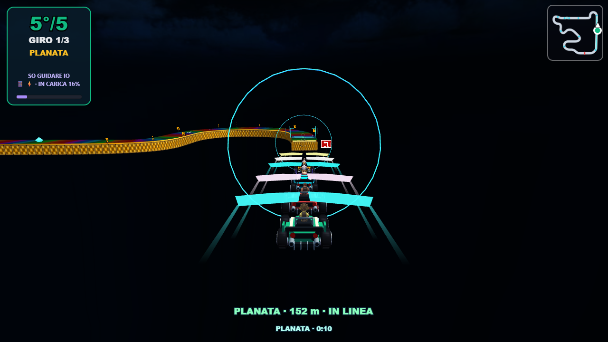
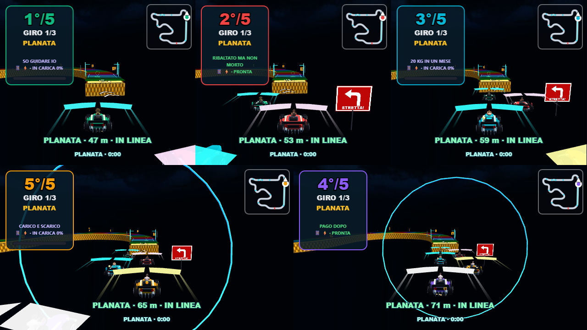
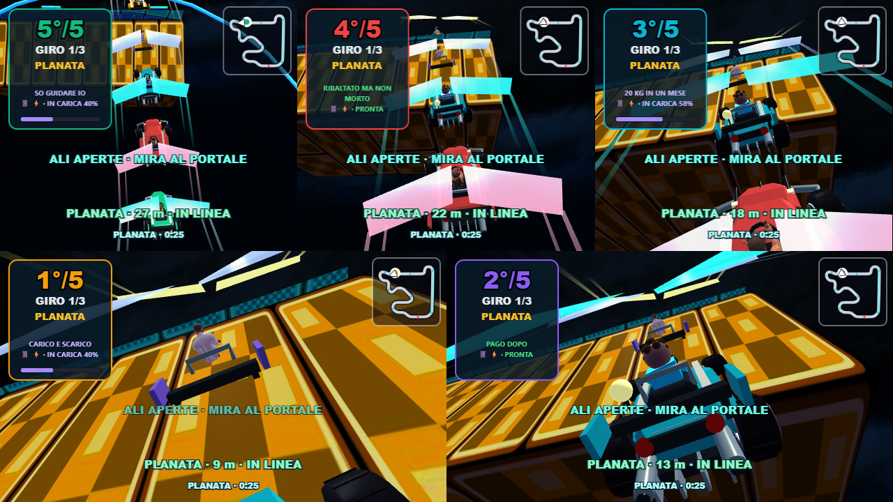
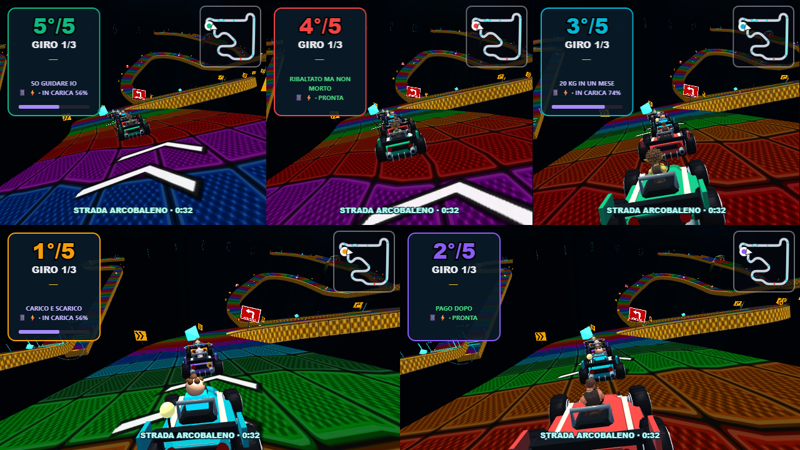

Ali sagomate, sterzo più progressivo e una guida di atterraggio che mostra dove arriveresti rilasciando il comando. La camera anticipa il gap; sospensioni e suono accompagnano il contatto.
Il marker verde indica la traiettoria stimata al rilascio dello sterzo. La piattaforma è evidenziata da un portale aperto. Posa predisposta per verificare la leggibilità.

Ali e guida durante una gara completa nel browser.

Ogni visuale mostra solo il proprio indicatore di atterraggio.

Salto Aurora: stesso controllo smorzato anche sul gap breve.

Tracciato e modello della pista conservati.
Misura locale: 55,59 FPS medi su RTX 3050, HIGH, 1280×720, scala 1 e cinque visuali, nel campione di gara tra 2 e 10 secondi. Non è una garanzia per ogni dispositivo.